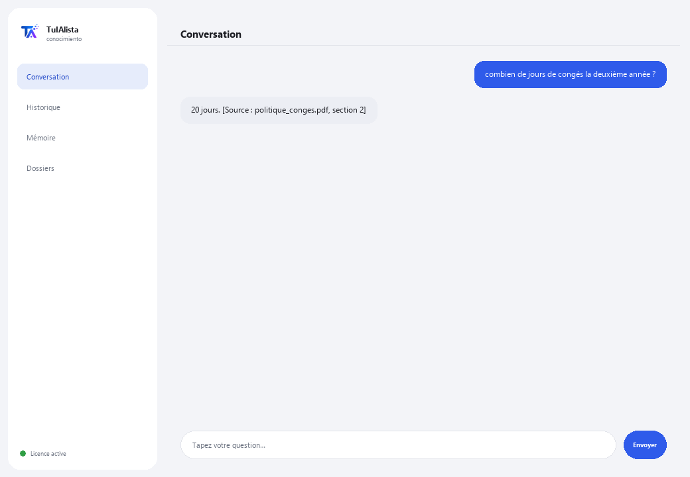

Agent de connaissance interne
Transforme tous les documents de votre entreprise en une base de connaissances qui répond aux questions en citant la source.
Que résout-il et de quoi avez-vous besoin ?
Dans toute entreprise, la connaissance est éparpillée : politiques dans un PDF, processus dans un Word, prix dans un Excel, l'intégration dans un PowerPoint. La réponse à “combien de jours de congés ai-je” existe, mais personne ne sait dans quel fichier. Cet agent indexe tout et répond en citant exactement d'où vient chaque information.
- Vous avez besoin de : votre clé de licence (TIA-XXXX-XXXX-XXXX-XXXX) et du dossier contenant les documents internes. Ni Python ni connaissances techniques.
- Premier résultat en moins de 5 minutes : vous installez, activez, choisissez votre dossier et posez directement ce que vous avez besoin de savoir.
- Les connaissances de votre entreprise ne quittent jamais votre ordinateur — l'index est construit et consulté localement.
soporte@tuialista.com ou visitez tuialista.com/soporte — nous répondons généralement le jour même.1 Ce que fait cet agent
Vous lui indiquez le dossier contenant les documents internes et l'agent :
- Les indexe tous (PDF, Word, Excel, CSV, PowerPoint, texte, Markdown) dans une base locale.
- Divise chaque document en fragments pour trouver la partie exacte qui répond.
- Répond aux questions de votre équipe en utilisant uniquement ces documents, et cite toujours d'où vient chaque information ([Source : fichier, section]).
- Résume un sujet en consolidant ce que disent plusieurs documents.
- Détecte les lacunes de connaissance : sujets mentionnés souvent mais sans document dédié.
- Constitue un annuaire des responsables : qui apparaît comme en charge de quoi.
L'essentiel : si la réponse n'est pas dans les documents, l'agent le dit plutôt que d'inventer.
2 Installation (2 minutes)
Pour Windows. Pas besoin d'internet permanent ni de rien envoyer sur le cloud.
Téléchargez l'installateur depuis tuialista.com/descargar (agent Connaissance) et ouvrez-le. Il crée un raccourci sur votre bureau avec le logo — pas besoin de Python ni de terminal.
Double-cliquez sur la nouvelle icône. Collez votre clé de licence (reçue par e-mail à l'achat) et cliquez sur Activer. Une coche verte apparaît quand elle est valide.
Sélectionnez le dossier contenant vos documents internes et cliquez sur Commencer à utiliser l'agent. La prochaine fois, il démarre directement — il se souvient de votre clé et de votre dossier.
3 Comment l'utiliser
L'agent ouvre une fenêtre de discussion, comme une app de messagerie — pas un écran noir de programmeur. Son usage principal est de poser des questions directement dans le champ de texte, et il a aussi quelques commandes d'exploration :

> question libre ?L'usage principal. Écrivez votre question telle quelle, ex. : combien de jours de congés correspondent à la deuxième année ? — l'agent cherche dans les documents et répond en citant la source. Si l'information n'y est pas, il vous le dit plutôt que d'inventer.
> sujetsListe les catégories/domaines couverts par vos documents (politiques, processus, sécurité, RH, finances...) et dans combien de fichiers chacune apparaît.
> résumé <sujet>Rassemble ce que disent plusieurs documents sur un sujet et prépare un résumé exécutif, en signalant les contradictions s'il y en a. Ex. : résumé congés.
> lacunesSujets mentionnés souvent mais sans document dédié — utile pour savoir quelles politiques il convient d'écrire.
> annuaireNoms de personnes apparaissant comme responsables/en charge/contacts et dans quels documents.
> analyser <fichier>Lignes, nombre de fragments et un aperçu d'un document indexé.
> quitterTermine la session (fonctionne aussi avec exit).
4 Exemples d'usage courant
Résoudre une question de l'équipe
quelle est la procédure pour demander un achat supérieur à 10 000 $ ? — réponse avec la citation du document et de la section exacts.
Préparer un résumé pour l'intégration
résumé sécurité
Auditer la documentation
sujets → lacunes — vous voyez quels domaines sont bien couverts et lesquels n'ont presque pas de documentation.
Trouver le responsable
annuaire
5 Questions fréquentes
Les documents de mon entreprise sont-ils envoyés sur internet ?
Quels formats accepte-t-il ?
Cite-t-il vraiment la source ?
Que se passe-t-il si la réponse n'est pas dans les documents ?
Que fait-il si deux documents se contredisent ?
J'ai ajouté de nouveaux documents, en tient-il compte ?
Comment choisit-il quels fragments utiliser ?
Lit-il un PDF scanné ?
Dans quelle langue répond-il ?
Modifie-t-il mes documents ?
6 Résolution de problèmes
Un .pdf, .docx, .xlsx ou .pptx ne s'indexe pas
Affiche “0 documents indexés”
Une réponse cite le mauvais document
Affiche “Licence invalide” ou demande de se reconnecter
“Aucun fournisseur d'IA configuré”
Aucune de ces solutions n'a résolu votre problème ? Écrivez-nous directement — nous serons ravis de l'examiner avec vous.
soporte@tuialista.com ou visitez tuialista.com/soporte — nous répondons généralement le jour même.7 Confidentialité
Les connaissances de votre entreprise ne quittent jamais votre ordinateur.
- L'agent lit, découpe en fragments et indexe les documents localement, sur votre propre appareil. Il ne les envoie à aucun serveur.
- Les recherches, sujets, lacunes et l'annuaire sont calculés sur votre machine.
- La seule chose qui transite par internet est : (1) une vérification que votre licence est active — qui n'inclut pas vos documents —, et (2) en répondant à une question ou en générant un résumé, les fragments les plus pertinents sont envoyés au moteur d'IA pour rédiger la réponse. Le reste des connaissances reste local.